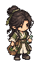
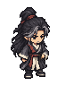

Huyễn Tâm
Bạch Chỉ Đan dược

Hắc Ấn Chấp Sự

KHE NÉ
境
Hằng Nhạc
NGOẠI MÔN • GIỜ THÌN
KIẾP NẠN HẰNG NHẠC
Hắc Ấn Chấp Sự
Ấn Hồi · Đang tụ ấn
Vân hải vô nhai, đạo tâm bất diệt.
記
Đạo thư vừa mở thêm một trang
Đã ghi nhận tiến trình tu luyện.
KIẾM LINH
W A S D Di chuyển · SHIFT Chạy nhanh